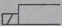
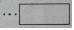
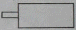
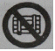

지게차운전기능사 (2011-07-31 기출문제)
1. 엔진의 윤활유 압력이 높아지는 이유는?
- 윤활유 펌프의 성능이 좋지 않다.
- 윤활유량이 부족하다.
- 윤활유의 점도가 너무 높다.
- 기관 각부의 마모가 심하다.
(정답률: 78%)

2. 디젤기관에서 터보차저를 부착하는 목적으로 맞는 것은?
- 기관의 유효압력을 낮추기 위해서
- 기관의 냉각을 위해서
- 기관의 출력을 증대시키기 위해서
- 배기 소음을 줄이기 위해서
(정답률: 88%)
3. 기관에서 크랭크축의 회전과 관계없이 작동되는 기구는?
- 발전기
- 캠 샤프트
- 워터 펌프
- 스타트 모터
(정답률: 52%)
4. 건설기계기관에 있는 팬벨트의 장력이 약할 때 생기는 현상으로 맞는 것은?
- 발전기 출력이 저하될 수 있다.
- 물 펌프 베어링이 조기에 손상된다.
- 엔진이 과냉 된다.
- 엔진이 부조를 일으킨다.
(정답률: 57%)
5. 운전 중 엔진오일 경고등이 점등되었을 때의 원인이 아닌 것은?
- 오일 드레인 플러그가 열렸을 때
- 윤활계통이 막혔을 때
- 오일필터가 막혔을 때
- 오일 밀도가 낮을 때
(정답률: 60%)
6. 기관 과열 시 일어날 수 있는 현상으로 가장 적합한 것은?
- 연료가 응결될 수 있다.
- 실린더 헤드의 변형이 발생할 수 있다.
- 흡배기 밸브의 열림량이 많아진다.
- 밸브 개폐시기가 빨라진다.
(정답률: 74%)
7. 기관의 피스톤이 고착되는 원인으로 틀린 것은?
- 냉각수 량이 부족할 때
- 기관오일이 부족하였을 때
- 기관이 과열되었을 때
- 압축 압력이 너무 높았을 때
(정답률: 51%)
8. 건설기계에서 사용하는 경유의 중요한 성질이 아닌 것은?
- 옥탄가
- 비중
- 착화성
- 세탄가
(정답률: 59%)
9. 건설기계에서 엔진부조가 발생되고 있다. 그 원인으로 맞는 것은?
- 인젝트 공급파이프의 연료 누설
- 인젝터 연료 리턴 파이프의 연료 누설
- 가속페달 케이블의 조정 불량
- 자동변속기의 고장 발생
(정답률: 52%)
10. 디젤기관에서 연료가 정상적으로 공급되지 않아 시동이 꺼지는 현상이 발생 되었다. 그 원인으로 적합하지 않는 것은?
- 연료파이프 손상
- 프라이밍 펌프 고장
- 연료 필터 막힘
- 자동변속기의 고장 발생
(정답률: 36%)
11. 디젤기관과 관계없는 것은?
- 경유를 연료로 사용한다.
- 점화장치 내에 배전기가 있다.
- 압축 착화한다.
- 압축비가 가솔린기관보다 높다.
(정답률: 65%)
12. 운전 중 운전석 계기판에서 확인해야 하는 것이 아닌 것은?
- 실린더 압력계
- 연료량 게이지
- 냉각수 온도게이지
- 충전 경고등
(정답률: 78%)
13. 건설기계 엔진에 사용되는 시동모터가 회전이 안 되거나 회전력이 약한 원인이 아닌 것은?
- 시동스위치 접촉 불량이다.
- 배터리 단자와 터미널의 접촉이 나쁘다.
- 브러시가 정류자에 잘 밀착되어 있다.
- 배터리 전압이 낮다.
(정답률: 76%)
14. 야간작업 시 헤드라이트가 한쪽만 점등되었다. 고장 원인으로 가장 거리가 먼 것은?
- 헤드라이트 스위치 불량
- 전구 접지불량
- 한 쪽 회로의 퓨즈 단선
- 전구 불량
(정답률: 71%)
15. AC 발전기에서 전류가 발생되는 곳은?
- 로터 코일
- 레귤레이터
- 스테이터 코일
- 전기자 코일
(정답률: 49%)
16. 축전지 터미널에 부식이 발생하였을 때 나타나는 현상과 가장거리가 먼 것은?
- 기동 전동기의 회전력이 작아진다.
- 엔진 크랭킹이 잘 되지 않는다.
- 전압강하가 발생된다.
- 시동 스위치가 손상된다.
(정답률: 57%)
17. 실드 형 예열 플러그에 대한 설명으로 맞는 것은?
- 히트 코일이 노출되어 있다.
- 발열량은 많으나 열용량은 적다.
- 열선이 병렬로 결선되어 있다.
- 축전지의 전압을 강하시키기 위하여 저항기를 직렬 접속한다.
(정답률: 48%)
18. 납산축전지를 오랫동안 방전상태로 두면 사용하지 못하게 되는 원인은?
- 극판이 영구 황산납이 되기 때문이다.
- 극판에 산화납이 형성되기 때문이다.
- 극판에 수소가 형성되기 때문이다.
- 극판에 녹이 슬기 때문이다.
(정답률: 59%)
19. 무한궤도식 건설기계에서 트랙 장력을 측정하는 부위로 가장 적합한 것은?
- 아이들러와 스프로킷 사이
- 1번 상부롤러와 2번 상부롤러 사이
- 스프로킷과 1번 상부롤러 사이
- 아이들러와 1번 상부롤러 사이
(정답률: 40%)
20. 굴삭기 붐의 자연 하강량이 많을 때의 원인이 아닌 것은?
- 유압실린더의 내부누출이 있다.
- 콘트롤 밸브의 스풀에서 누출이 많다.
- 유압실린더 배관이 파손되었다.
- 유압작동 압력이 과도하게 높다.
(정답률: 63%)
21. 일반적으로 기중기의 드럼 클러치로 사용되고 있는 것은?
- 외부 확장식
- 외부 수축식
- 내부 확장식
- 내부 수축식
(정답률: 50%)
22. 엔진에서 발생한 회전동력을 바퀴까지 전달할 때 마지막으로 감속작용을 하는 것은?
- 클러치
- 트랜스미션
- 프로펠러샤프트
- 파이널드라이버기어
(정답률: 56%)
23. 타이어식 건설기계에서 앞바퀴 정렬의 역할과 거리가 먼 것은?
- 브레이크의 수명을 길게 한다.
- 타이어 마모를 최소로 한다.
- 방향 안정성을 준다.
- 조향핸들의 조작을 작은 힘으로 쉽게 할 수 있다.
(정답률: 62%)
24. 지게차 작업시 안전 수칙으로 틀린 것은?
- 주차 시에는 포크를 완전히 지면에 내려야 한다.
- 화물을 적재하고 경사지를 내려갈 때는 운전 시야 확보를 위해 전진으로 운행해야 한다.
- 포크를 이용하여 사람을 싣거나 들어 올리지 않아야 한다.
- 경사지를 오르거나 내려올 때는 급회전을 금해야 한다.
(정답률: 84%)
25. 크롤러형 로더로 작업을 할 수 있는 것을 나열한 것이다. 해당이 없는 것은?
- 수직 굴토작업
- 포장로 제거
- 제설작업
- 골재의 처리작업
(정답률: 57%)
26. 토크컨버터 구성품 중 스테이터의 기능으로 옳은 것은?
- 오일의 방향을 바꾸어 회전력을 증대시킨다.
- 토크컨버터의 동력을 전달 또는 차단한다.
- 오일의 회전속도를 감속하여 견인력을 증대시킨다.
- 클러치판의 마찰력을 감소시킨다.
(정답률: 40%)
27. 건설기계등록번호표의 색칠 기준으로 틀린 것은?(관련 규정 개정전 문제로 여기서는 기존 정답인 4번을 누르면 정답 처리됩니다. 자세한 내용은 해설을 참고하세요.)
- 자가용 - 녹색 판에 흰색 문자
- 영업용 - 주황색 판에 흰색 문자
- 관용 - 흰색 판에 검은색 문자
- 수입용 - 적색 판에 흰색 문자
(정답률: 70%)
28. 자동차에서 팔을 차체의 밖으로 내어45° 밑으로 펴서 상하로 흔들고 있을 때의 신호는?
- 서행신호
- 정지신호
- 주의신호
- 앞지르기신호
(정답률: 70%)
29. 차로가 설치된 도로에서통행방법 중 위반이 되는 것은?
- 택시가 건설기계를 앞지르기 하였다.
- 차로를 따라 통행하였다.
- 경찰관의 지시에 따라 중앙 좌측으로 진행하였다.
- 두 개의 차로에 걸쳐 운행하였다.
(정답률: 84%)
30. 교차로 통행방법 설명 중 틀린 것은?
- 교차로 내는 차선이 없으므로 진행방향을 임의로 바꿀 수 있다.
- 좌회전할 때에는 교차로 중심 안쪽으로 서행한다.
- 교차로에서 직진하려는 차는 이미 교차로에 진입하여 좌회전하고 있는 차의 진로를 방해할 수 없다.
- 교차로에서 우회전할 때에는 서행하여야 한다.
(정답률: 80%)
31. 도로교통법에 의한 통고처분의 수령을 거부하거나 범칙금을 기간 안에 납부하지 못한 자는 어떻게 처리되는가?
- 면허의 효력이 정지된다.
- 면허증이 취소된다.
- 연기신청을 한다.
- 즉결 심판에 회부된다.
(정답률: 52%)
32. 신규 등록일 부터 5년 경과된 트럭적재식 천공기의 정기검사 유효기간은?
- 6개월
- 1년
- 2년
- 3년
(정답률: 46%)
33. 건설기계관리법령상 건설기계의 총 종류 수는?
- 16종(15종 및 특수건설기계)
- 21종(20종 및 특수건설기계)
- 27종(26종 및 특수건설기계)
- 30종(27종 및 특수건설기계)
(정답률: 57%)
34. 폐기요청을 받은 건설기계를 폐기하지 아니하거나 등록번호표를 폐기하지 아니한 자에 대한 벌칙은?(관련 규정 개정전 문제로 기존 정답은 2번이었으면 여기서는 2번을 누르면 정답 처리됩니다. 바뀌 규정은 해설을 참조하세요.)
- 2년 이하의 징역 또는 1천만원 이하의 벌금
- 1년 이하의 징역 또는 3백만원 이하의 벌금
- 2백만원 이하의 벌금
- 1백만원 이하의 벌금
(정답률: 73%)
35. 주차.정차가 금지되어 있지 않은 장소는?
- 교차로
- 건널목
- 횡단보도
- 경사로의 정상부근
(정답률: 72%)
36. 다음 중 항발기를 조종할 수 있는 건설기계 조종사 면허는?(2012년 3월 개정된 법령기준으로 답을 찾아주세요.)
- 천공기
- 공기압축기
- 횡단보도
- 스크레이퍼
(정답률: 65%)
37. 유압회로에서 유량제어를 통하여 작업속도를 조절하는 방식에 속하지 않는 것은?
- 미터 인(meter in) 방식
- 미터 아웃(meter out) 방식
- 브리드 오프(bleed off) 방식
- 브리드 온(bleed on) 방식
(정답률: 53%)
38. 유압장치에 부착되어 있는 오일탱크의 부속장치가 아닌 것은?
- 주입구 캡
- 유면계
- 배플
- 피스톤 로드
(정답률: 61%)
39. 밀폐된 용기에 채워진 유체의 일부에 압력을 가하면 유체 내의 모든 곳에 같은 크기로 전달된다는 원리는?
- 파스칼의 원리
- 베르누이의 원리
- 보일샬의 원리
- 아르키메데스의 원리
(정답률: 78%)
40. 구동되는 기어펌프의 회전수가 변하였을 때 가장 적합한 설명은?
- 오일의 유량이 변한다.
- 오일의 압력이 변한다.
- 오일의 흐름 방향이 변한다.
- 회전 경사판의 각도가 변한다.
(정답률: 42%)
41. 유압장치에서 유압조정밸브의 조정방법은?
- 압력조절밸브가 열리도록 하면 유압이 높아진다.
- 밸브스프링의 장력이 커지면 유압이 낮아진다.
- 조정 스크류를 조이면 유압이 높아진다.
- 조정 스크류를 풀면 유압이 높아진다.
(정답률: 60%)
42. 축압기의 종류 중 공기 압축형이 아닌 것은?
- 스프링 하중식(spring loaded type)
- 피스톤식(piston type)
- 다이어프램식(diaphragm type)
- 블래더식(bladder type)
(정답률: 43%)
43. 유압모터의 단점에 해당 되지 않는 것은?
- 작동유에 먼지나 공기가 침입하지 않도록 특히 보수에 주의해야 한다.
- 작동유가 누출되면 작업 성능에 지장이 있다.
- 작동유의 점도변화에 의하여 유압모터의 사용에 제약이 있다.
- 릴리프 밸브를 부착하여 속도나 방향제어하기가 곤란하다.
(정답률: 76%)
44. 유압유의 온도가 과도하게 상승하였을 때 나타날 수 있는 현상과 관계없는 것은?
- 유압유의 산화작용을 촉진한다.
- 작동 불량 현상이 발생한다.
- 기계적인 마모가 발생할 수 있다.
- 유압기계의 작동이 원활해진다.
(정답률: 77%)
45. 유압장치의 일상점검 항목이 아닌 것은?
- 오일의 양 점검
- 변질상태 점검
- 오일의 누유 여부 점검
- 탱크 내부 점검
(정답률: 79%)
46. 방향전환 밸브의 조작 방식에서 단동 솔레노이드 기호는?



(정답률: 51%)
47. 안전?보건표지의 종류와 형태에서 그림의 안전 표지판이 나타내는 것은?

- 사용금지
- 탑승금지
- 보행금지
- 물체이동금지
(정답률: 76%)
48. 크레인 작업 방법 중 적합하지 않은 것은?
- 경우에 따라서는 수직 방향으로 달아 올린다.
- 신호수의 신호에 따라 작업한다.
- 제한하중 이상의 것은 달아 올리지 않는다.
- 항상 수평으로 달아 올려야 한다.
(정답률: 52%)
49. 높은 곳에 출입할 때는 안전장구를 착용하여야 하는데 안전대용 로프의 구비조건에 해당 되지 않는 것은?
- 충격 및 인장 강도에 강할 것
- 내마모성이 높을 것
- 내열성이 높을 것
- 완충성이 적고, 매끄러울 것
(정답률: 78%)
50. 다음 중 크레인을 이용한 작업방법 중 안전기준에 해당하지 않는 것은?
- 급회전하지 않는다.
- 작업 중 시계가 양호한 방향으로 선회한다.
- 작업 중인 크레인의 작업 반경 내에 접근하지 않는다.
- 크레인을 이용하여 화물을 운반할 때 붐의 각도는 20도 이하 또는 78도 이상으로 하여 작업 한다.
(정답률: 68%)
51. 다음 중 안전의 제일 이념에 해당하는 것은?
- 품질 향상
- 재산 보호
- 인간 존중
- 생산성 향상
(정답률: 81%)
52. 연삭 작업시 반드시 착용해야 하는 보호구는?
- 방독면
- 장갑
- 보안경
- 마스크
(정답률: 68%)
53. 감전되거나 전기화상을 입을 위험이 있는 작업에서 제일 먼저 작업자가 구비해야 할 것은?
- 완강기
- 구급차
- 보호구
- 신호기
(정답률: 83%)
54. 유해광선이 있는 작업장에 보호구로 가장 적절한 것은?
- 보안경
- 안전모
- 귀마개
- 방독마스크
(정답률: 84%)
55. 일반 수공구 사용시 주의사항으로 틀린 것은?
- 용도 이외에는 사용하지 않는다.
- 사용 후에는 정해진 장소에 보관한다.
- 수공구는 손에 잘 잡고 떨어지지 않게 작업한다.
- 볼트 및 너트의 조임에 파이프렌치를 사용한다.
(정답률: 82%)
56. 추락 위험이 있는 장소에서 작업할 때 안전관리 상 어떻게 하는 것이 가장 좋은가?
- 안전띠 또는 로프를 사용한다.
- 일반 공구를 사용한다.
- 이동식 사다리를 사용하여야 한다.
- 고정식 사다리를 사용하여야 한다.
(정답률: 79%)
57. 도로 굴착시 황색의 도시가스 보호포가 나왔다. 매설된 도시가스 배관의 압력은?
- 고압
- 중압
- 저압
- 초고압
(정답률: 44%)
58. 지중전선로 중에 직접 매설식에 의하여 시설 할 경우에는 토관이 깊이를 최소 몇 m 이상으로 하여야 하는가? (단, 차량 및 기타 중량물의 압력을 받을 우려는 없는 장소)
- 0.6m
- 0.9m
- 1.0m
- 1.2m
(정답률: 38%)
59. 가스배관과 수평거리 몇 cm 이내에서는 파일박기를 할 수 없도록 도시가스 사업법에 규정되어 있는가?
- 30
- 60
- 90
- 120
(정답률: 40%)
60. 굴착장비를 이용하여 도로 굴착작업 중 “고압선 위험” 표지시트가 발견되었다. 다음 중 맞는 것은?
- 표지시트 좌측에 전력케이블이 묻혀 있다.
- 표지시트 우측에 전력케이블이 묻혀 있다.
- 표지시트와 직각방향에 전력케이블이 묻혀 있다.
- 표지시트 지하에 전력케이블이 묻혀 있다.
(정답률: 71%)